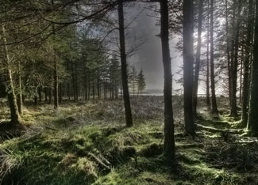

In early December 2004, Philippine President Gloria Macapagal Arroyo “ordered the military and police to crack down on illegal logging, after flash floods and landslides, triggered by rampant deforestation, killed nearly 340 people,” according to news reports. Fifteen years earlier, in 1989, the government of Thailand announced a nationwide ban on tree cutting following severe flooding and the heavy loss of life in landslides. And in August 1998, following several weeks of record flooding in the Yangtze River basin and a staggering $30 billion worth of damage, the Chinese government banned all tree cutting in the upper reaches of the basin.
Each of these governments had belatedly learned a costly lesson, namely that services provided by forests, such as flood control, may be far more valuable to society than the lumber in those forests.
At the beginning of the 20th century, the Earth’s forested area was estimated at 5 billion hectares. Since then, it has shrunk to just under 4 billion hectares, with the remaining forests rather evenly divided between tropical and subtropical forests in developing countries and temperate/boreal forests in industrial countries. Since 1990, the developing world has lost some 13 million hectares of forest a year. This loss of about 3 percent each decade is an area roughly the size of Greece. Meanwhile, the industrial world is actually gaining an estimated 5.6 million hectares of forestland each year, principally from abandoned cropland returning to forests on its own and from the spread of commercial forestry plantations. Thus, net forest loss worldwide exceeds 7 million hectares per year.
Unfortunately, even these official data from the United Nations Food and Agriculture Organization do not reflect the gravity of the situation. For example, tropical forests that are clearcut or burned off rarely recover. They simply become wasteland or at best scrub forest, yet they still may be counted as “forest” in official forestry numbers. Plantations, too, count as forest area, yet they also are a far cry from the old-growth forest they sometimes replace.
The World Resources Institute (WRI) reports that, of the forests that still stand, “the vast majority are no more than small or highly disturbed pieces of the fully functioning ecosystems they once were.” Only 40 percent of the world’s remaining forests can be classified as frontier forest, which WRI defines as “large, intact, natural forest systems relatively undisturbed and big enough to maintain all of their biodiversity, including viable populations of the wide-ranging species associated with each type.”
Pressures on forests continue to mount. Use of firewood, paper and lumber is expanding. Of the 3.5 billion cubic meters of wood harvested worldwide in 2005, just over half was used for fuel. In developing countries, fuelwood accounts for nearly three fourths of the total.
Deforestation to supply fuelwood is extensive in the Sahelian zone of Africa and the Indian subcontinent. As urban firewood demand surpasses the sustainable yield of nearby forests, the woods slowly retreat from the city in an ever larger circle - a process clearly visible from satellite photos taken over time. As the circles enlarge, the transport costs of firewood increase, triggering the development of an industry for charcoal, which is a more concentrated form of energy. March Turnbull writes in Africa Geographic Online: “Every large Sahelian town is surrounded by a sterile moonscape. Dakar and Khartoum now reach out further than 500 kilometers for charcoal, sometimes into neighboring countries.”
Logging for lumber also takes a heavy toll, as is most evident in Southeast Asia and Africa. In almost all cases, logging is done by foreign corporations more interested in maximizing a one-time harvest than in managing for a sustainable yield in perpetuity. Once a country’s forests are gone, companies move on, leaving only devastation behind. Nigeria and the Philippines have both lost their once-thriving tropical hardwood export industries and are now net importers of forest products.
Perhaps the most devastating development affecting the Earth’s remaining natural forests in this new century is the explosive growth of the wood products industry in China, now supplying the world with furniture, flooring, particle board and other building materials. In supplying domestic and foreign markets, China has gone on a logging orgy outside its borders, often illegally, to procure logs from Papua New Guinea, Indonesia, Myanmar and Siberia. And now Chinese logging firms are moving into the Amazon and the Congo Basin.
Forest Trends, a nongovernmental organization consisting of industry and conservation groups, estimates that, at the current rate of logging, the natural forests in Indonesia and Myanmar will be gone within a decade or so. Those in Papua New Guinea will last 16 years. Those in the Russian Far East, vast though they are, may not last much more than 20 years.
Forest losses from clearing land for farming and ranching, usually by burning, are concentrated in the Brazilian Amazon, the Congo Basin and Borneo. After having lost 93 percent of its Atlantic rainforest, Brazil is now destroying the Amazon rainforest. This huge forest, roughly the size of Europe, was largely intact until 1970. Since then, close to 20 percent has been lost.
Africa’s Congo Basin, the world’s second largest rainforest, spans 10 countries. Like the Amazon rainforest, it is also under assault, primarily from loggers, miners and farmers. This 190-million-hectare rainforest - home to 400 species of mammals, including the world’s largest populations of gorillas, bonobos, chimpanzees and forest elephants - is shrinking by 1.6 million hectares a year.
The fast-rising demand for palm oil led to an 8-percent annual expansion in the palm plantation area in Malaysian Borneo (Sarawak and Sabah) between 1998 and 2003. In Kalimantan, the Indonesian part of Borneo, growth in oil palm plantings is higher, at over 11 percent. Now that palm oil is emerging as a leading biodiesel fuel, growth in oil palm cultivation will likely climb even faster. The near limitless demand for biodiesel now threatens the remaining tropical forests in Borneo and elsewhere.
Haiti, a country of 9.6 million people, was once largely covered with forests, but growing firewood demand and land clearing for farming have left forests standing on scarcely 4 percent of its land. First the trees go, then the soil. Once a tropical paradise, Haiti is a case study of a country caught in an ecological and economic downward spiral from which it has not been able to escape. It is a failed state, a country sustained by international life-support systems of food aid and economic assistance.
The biologically rich rainforest of Madagascar, an island country with 18 million people, is following in Haiti’s footsteps. As the trees are cut - either to produce charcoal or to clear land to grow food - the sequence of events is all too familiar. Environmentalists warn that Madagascar could soon become a landscape of scrub growth and sand.
When land is cleared for grazing or farming in the Amazon, the amount of rainfall that runs off and returns to the sea increases, while that which is recycled inland to provide more rainfall is reduced dramatically. The forest begins to dry out, and at some point, the weakened rainforest becomes vulnerable to fire. As the Amazon rainforest weakens, it is approaching a tipping point beyond which it cannot be saved.
A similar situation may be developing in Africa, where deforestation and land clearing are proceeding rapidly as firewood use mounts and as logging firms clear large tracts of virgin forests. As the trees disappear, rainfall runoff increases, depriving the land of the water pumped through trees and into the atmosphere. When the forests disappear, this rainfall declines and crop yields follow.
More and more countries are beginning to recognize the risks associated with deforestation. Among the countries that now have total or partial bans on logging in primary forests are China, New Zealand, the Philippines, Sri Lanka, Thailand and Vietnam. Unfortunately, all too often a ban in one country simply drives illegal logging or shifts the deforestation to other countries.
|
 MIKE138/FLICKR When forests disappear, they take animal populations, crop yields and flood protection with them. |
|
|